cambridgema vs ggplot2 Default Colors
Source:vignettes/colorblind-friendly.Rmd
colorblind-friendly.RmdSide-by-Side Comparisons
This vignette demonstrates the visual differences between ggplot2’s default color scales and cambridgema palettes across common plot types.
Scatter Plot: Categorical Colors
ggplot2 Default
ggplot(iris, aes(Sepal.Width, Sepal.Length, color = Species)) +
geom_point(size = 3, alpha = 0.8) +
labs(title = "ggplot2 Default Colors") +
theme_minimal()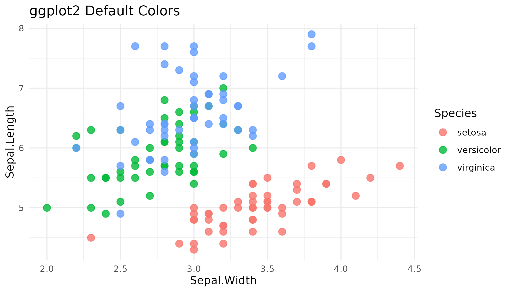
cambridgema autumn
ggplot(iris, aes(Sepal.Width, Sepal.Length, color = Species)) +
geom_point(size = 3, alpha = 0.8) +
scale_color_cam("autumn") +
labs(title = "cambridgema: autumn palette") +
theme_minimal()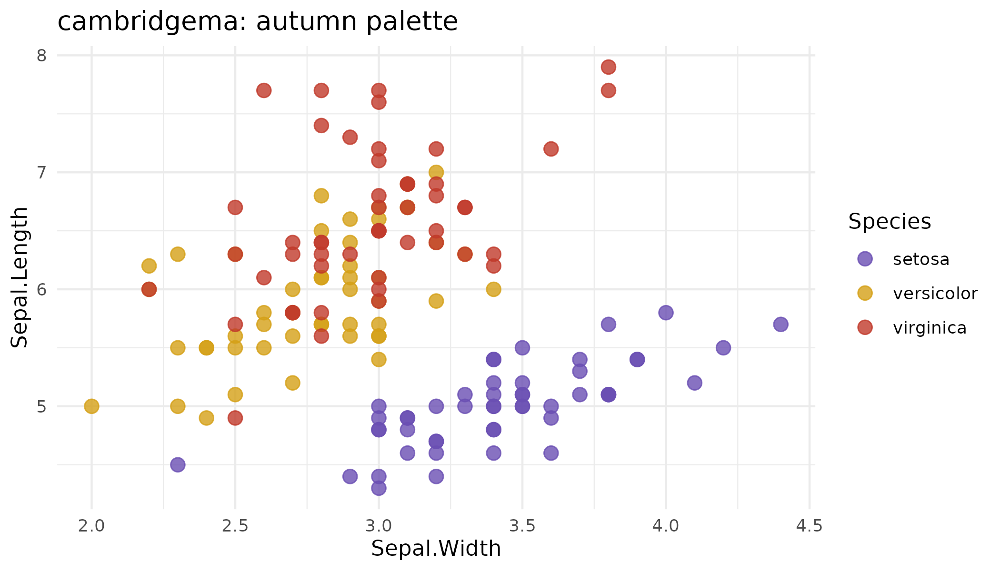
Bar Chart: Fill Colors
ggplot2 Default
ggplot(mpg, aes(class, fill = class)) +
geom_bar() +
labs(title = "ggplot2 Default Colors") +
theme_minimal() +
theme(legend.position = "none",
axis.text.x = element_text(angle = 45, hjust = 1))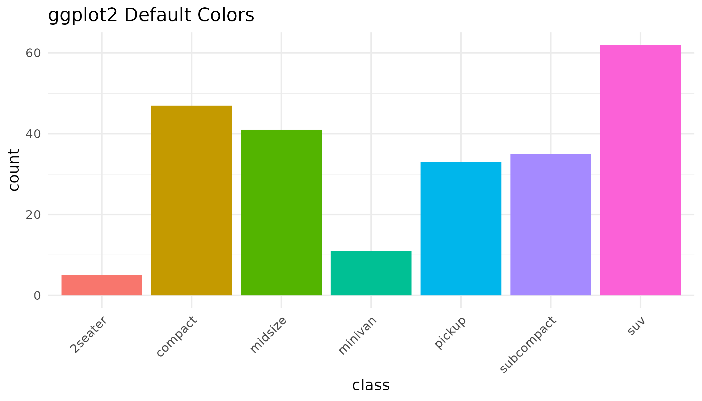
cambridgema summer
ggplot(mpg, aes(class, fill = class)) +
geom_bar() +
scale_fill_cam("summer") +
labs(title = "cambridgema: summer palette") +
theme_minimal() +
theme(legend.position = "none",
axis.text.x = element_text(angle = 45, hjust = 1))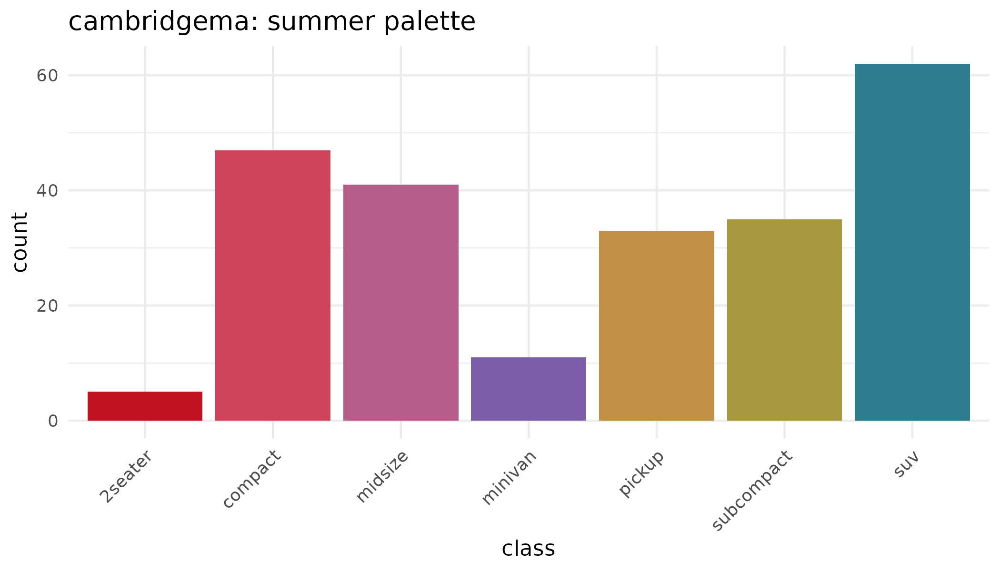
Heatmap: Sequential Colors
ggplot2 Default
ggplot(faithfuld, aes(waiting, eruptions, fill = density)) +
geom_tile() +
labs(title = "ggplot2 Default Sequential") +
theme_minimal()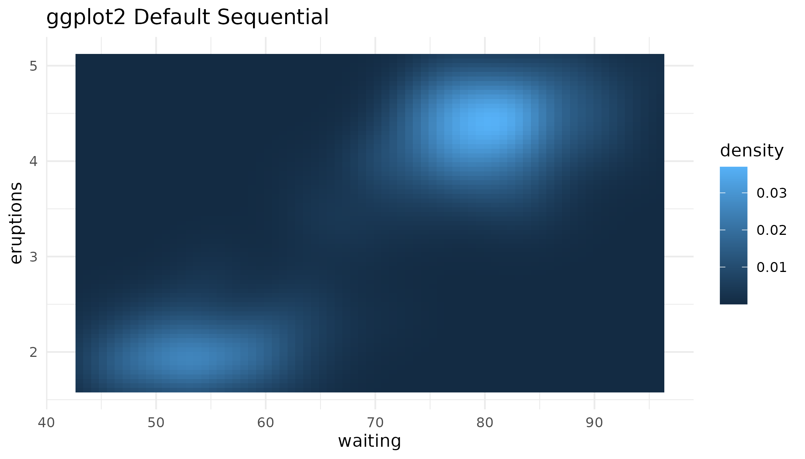
cambridgema river_seq
ggplot(faithfuld, aes(waiting, eruptions, fill = density)) +
geom_tile() +
scale_fill_cam("river_seq", discrete = FALSE) +
labs(title = "cambridgema: river_seq palette") +
theme_minimal()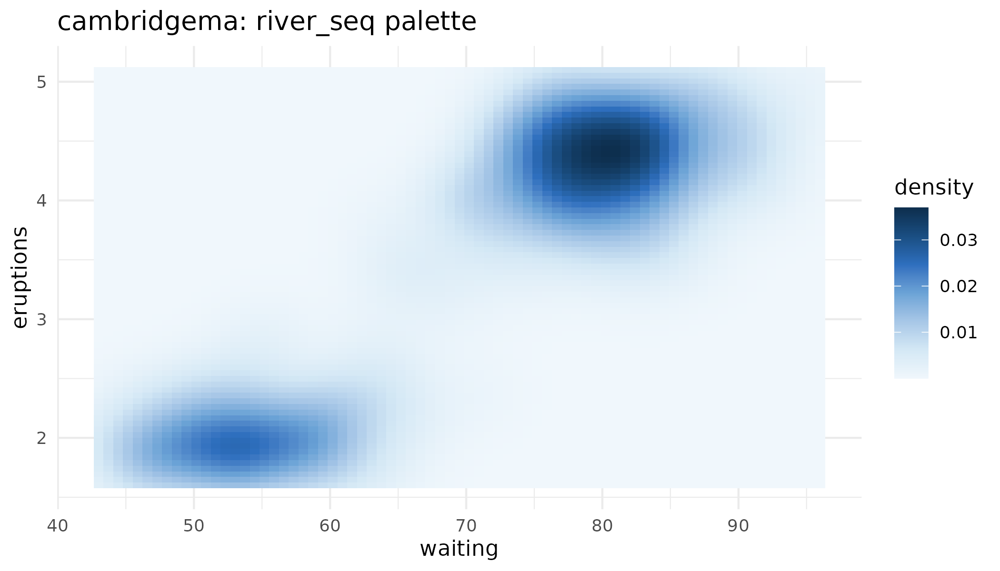
Correlation Matrix: Diverging Colors
ggplot2 Default
cor_mat <- cor(mtcars[, 1:6])
cor_df <- as.data.frame(as.table(cor_mat))
names(cor_df) <- c("Var1", "Var2", "value")
ggplot(cor_df, aes(Var1, Var2, fill = value)) +
geom_tile() +
labs(title = "ggplot2 Default") +
theme_minimal() +
theme(axis.text.x = element_text(angle = 45, hjust = 1))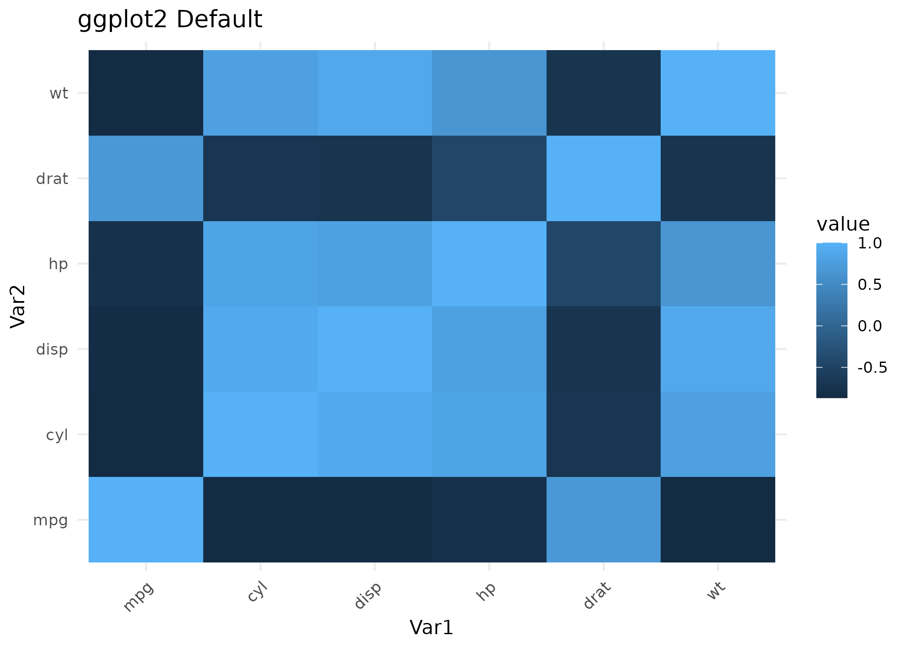
cambridgema crimson_blue
ggplot(cor_df, aes(Var1, Var2, fill = value)) +
geom_tile() +
scale_fill_cam("crimson_blue") +
labs(title = "cambridgema: crimson_blue palette") +
theme_minimal() +
theme(axis.text.x = element_text(angle = 45, hjust = 1))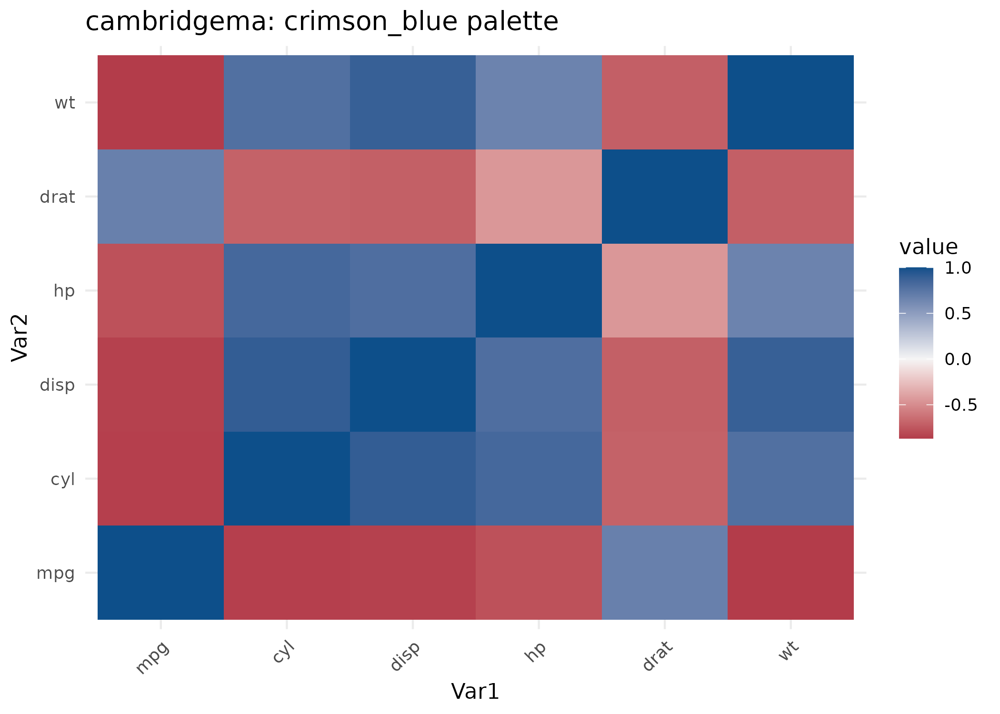
Box Plot: Group Comparisons
ggplot2 Default
ggplot(iris, aes(Species, Sepal.Length, fill = Species)) +
geom_boxplot() +
labs(title = "ggplot2 Default Colors") +
theme_minimal() +
theme(legend.position = "none")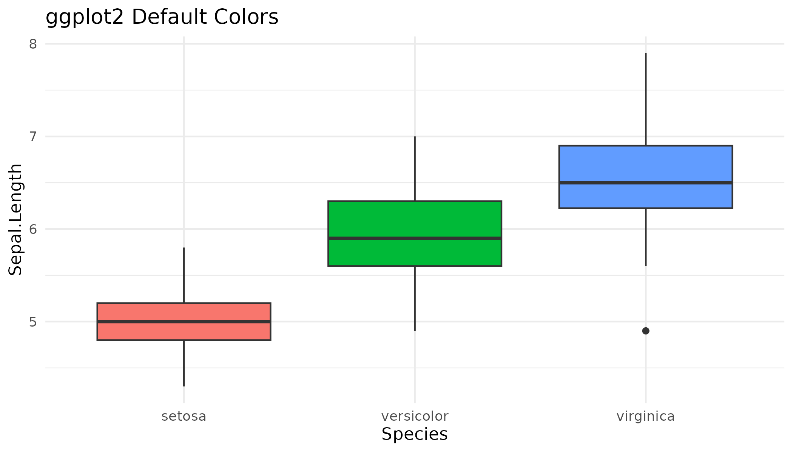
cambridgema spring
ggplot(iris, aes(Species, Sepal.Length, fill = Species)) +
geom_boxplot() +
scale_fill_cam("spring") +
labs(title = "cambridgema: spring palette") +
theme_minimal() +
theme(legend.position = "none")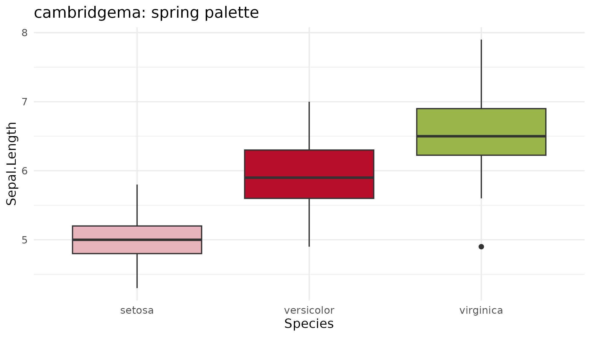
Choosing a Palette
| Data Type | Recommended Palettes |
|---|---|
| Categorical (3-5 groups) |
spring, summer, autumn,
winter, river
|
| Sequential (continuous) |
river_seq, crimson_seq,
foliage_seq
|
| Diverging (centered on zero) |
crimson_blue, brick_pine
|
Quick Reference
list_palettes()
#> $categorical
#> [1] "spring" "summer" "autumn" "winter" "river"
#>
#> $sequential
#> [1] "crimson_seq" "river_seq" "foliage_seq"
#>
#> $diverging
#> [1] "crimson_blue" "brick_pine"Combining Color with Shape
For maximum clarity, pair color with other visual encodings:
ggplot(iris, aes(Sepal.Width, Sepal.Length,
color = Species, shape = Species)) +
geom_point(size = 3) +
scale_color_cam("autumn") +
labs(title = "Color + Shape Encoding") +
theme_minimal()
Accessibility Tools
Check color distinguishability for any palette:
check_colorblind("autumn")
#> Colorblind Accessibility Check
#> ------------------------------
#> Status: PASS
#> Threshold: 10
#>
#> Minimum color distances:
#> Normal vision: 28.82
#> Deuteranopia: 9.87 (red-green, ~6% males)
#> Protanopia: 7.34 (red, ~2% males)
#> Tritanopia: 18.09 (blue-yellow, rare)Visualize how a palette appears under different viewing conditions:
plot_colorblind_sim("autumn")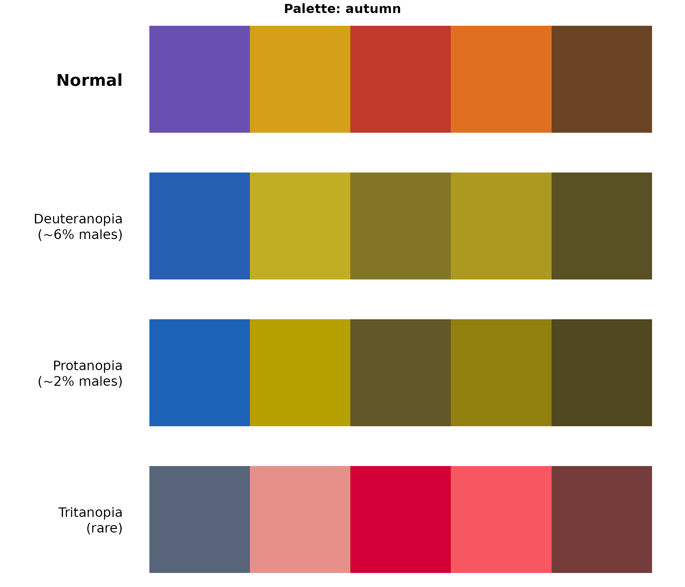